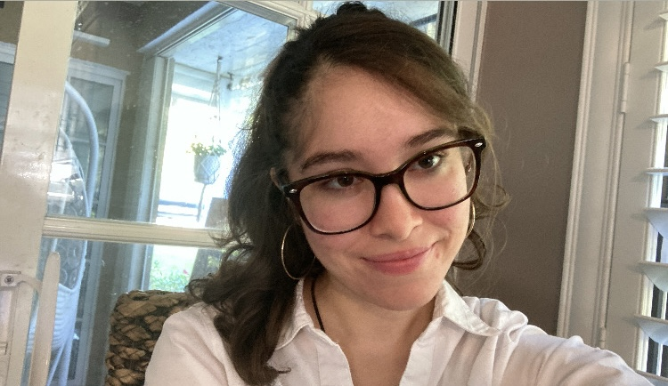

The artist behind the canvas
I am a student at the University of Central Florida who is majoring in Digital Media - web track.
All my life, I have always been an artist, and since starting college I have grown an interest in web design and development. My preferred art medium is graphite/pencil, but I also enjoy paint, charcoal and digital art. Although I mostly draw and design by hand, I am introducing digital art/drawing into my world of art!
In addition to my major, I am minoring in Computer Science. I decided to take on this minor to have knowledge on both sides of my career. While I am mostly working on the front-end of websites, I believe that I will truly grasp and comprehend the field that I will be working in by knowing how the back-end of things work along with front-end.

I am working now to one day implement my creative skills and insight for a company and help be a part of the development and design of their websites.